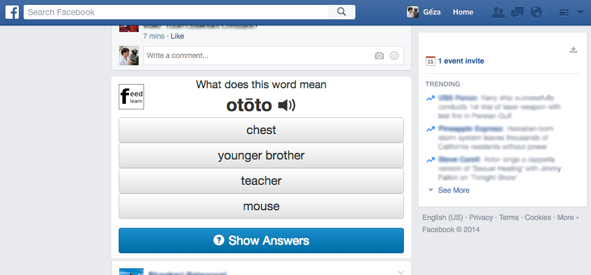

FeedLearn
Learn Japanese as you browse your Facebook news feed

Learn Japanese with FeedLearn!
FeedLearn is a Chrome extension that helps you learn Japanese vocabulary as you browse your Facebook feed.
If you would like to try FeedLearn, you can join our 3-week user study right now!
Each week, you will take a vocab test and learn 50 Japanese words with one of 3 tools.
To install FeedLearn and participate in the user study, please login below using Facebook (we do not post to your wall).
Study Description
This is a study to see whether we can help you learn Japanese vocabulary while you browse your Facebook news feed.
You will first install our Chrome extension, FeedLearn. This extension will show you vocabulary flashcards while you browse your Facebook news feed.
The study lasts for 3 weeks. Each week, you will:
1) Take a vocab pre-test on the 50 new words you will be studying that week
2) Study the words, using one of the following 3 approaches
• One week, you will be shown vocabulary quizzes directly in your feed
• Another week, you will be shown links in your feed asking you to go to the FeedLearn site to do the quizzes.
• Another week, you will be sent daily email reminders to study Japanese on the FeedLearn site.
3) At the end of the week, you will take a vocab post-test to see what you have learned.
We do not access any of your private data or post anything on your Facebook wall. You can leave the study anytime.
Contact Information